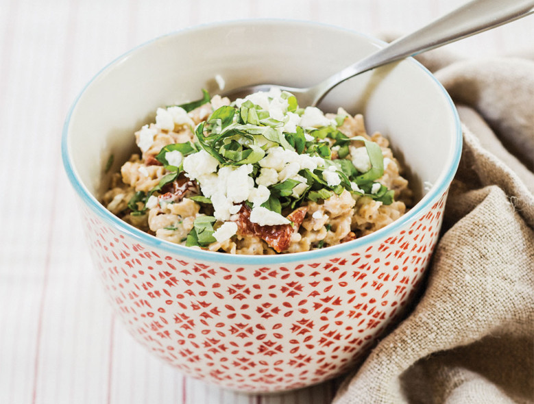

Mediterranean Oatmeal

This recipe can serve for a delicious breakfast, lunch, or even dinner! It is a savory take on oatmeal
and is bound to get your taste buds jumping.
Ingredients
- Oatmeal
- Sundried tomatoes
- Vegetable broth mix
- Greek yogurt
- Goat cheese
- Basil
- Pine nuts (optional)
Directions
- Bring 2 cups of water to a boil in a pot
- Add half a table spoon of vegetable broth
- Add handfull of Sundried tomatoes
- Add 1 cup of oatmeal and cook until preferred texture
- Mix in 1 table spoon of greek yogurt
- Mix 1/2 table spoon of goat cheese
- Garish top with fresh basil
| Ingredient |
Amount |
| Oats |
1 cup |
| Sundried tomatoes |
1/4 cup |
| Vegetable broth |
1 table spoon |
| Greek yogurt |
1 table spoon |
| Goat cheese |
1 cup |
| Basil |
1 leaf |
| Pine nuts |
1/4 cup |